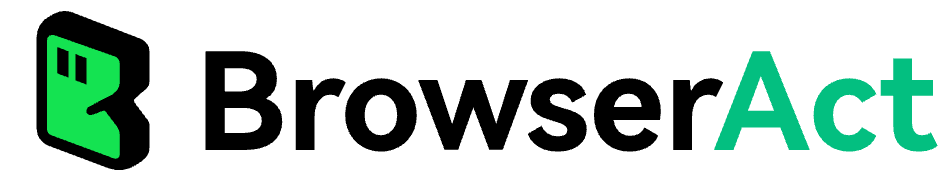

它解决什么
anti-bot
human handoff
parallel tasks
BrowserAct 关注的不是“能不能打开网页”，而是 Agent 在真实网页环境里会遇到的四个问题：封锁、接管、并发、隔离。
它不是单纯的浏览器 CLI，而是把 anti-bot 破墙、人工接管、并发隔离、版本化技能加载 收敛成一套给 AI Agent 直接调用的运行时。

README 的主张很清楚：不是再做一个脚本化浏览器，而是面向 AI Agent 的浏览器运行层。
BrowserAct 关注的不是“能不能打开网页”，而是 Agent 在真实网页环境里会遇到的四个问题：封锁、接管、并发、隔离。
它把能力组织成 entry skill 和 runtime content 两层，先让 Agent 意识到 BrowserAct 存在，再把实时规则加载进来。
适合需要稳定跑浏览器任务的人：自动化、信息抓取、账号运营、人工协作续接，而不是只想写一次性脚本的人。
它不是把网页搜索又包装了一层；它的核心卖点是“Agent 视角下的浏览器运行协议”。
README 把浏览器能力拆成三层递进，而不是单点功能。
先在浏览器指纹、TLS、代理等外层条件上做处理，尽量让多数站点在“还没触发风控”时就被化解。
常见用途场景：账号登录前置、站点初筛、批量任务起跑前的低摩擦访问。
当环境层还不够时，进入操作层工具：solve-captcha、stealth-extract 等，把“被挡住的页面”变成可继续处理的目标。
常见用途场景：验证码场景、受保护页面、需要快速提取内容的批量采集任务。
当自动化无法继续时，不是硬撞，而是把任务交给人类在远程 URL 上接管，结束后再无缝回到 Agent。
常见用途场景：强校验登录、不可绕过的人工确认、卡住时的远程续接与恢复。
它不是“一个浏览器跑到底”，而是按真实任务场景切换身份模型。
更适合已经有浏览器用户状态的场景。重点是“借用既有会话”，而不是重新造一份身份。
用于没有登录依赖、只想快速跑完一批任务的场景。每次 session 更像“新壳”，减少残留与关联风险。
用于多账号并发或长期运行的固定身份模式，要求 fingerprint 与 IP 都稳定，避免被识别成批量异常流量。
因为不同任务的核心约束不同：有的要继承登录态，有的要零痕迹，有的要稳定身份。BrowserAct 把这三类情况显式拆开了。
这部分最关键：它决定 Agent 何时“知道 BrowserAct 存在”，以及何时“拿到当前版本规则”。
安装到 Skills 目录的轻量文件，作用不是教所有细节，而是触发 Agent 对 BrowserAct 的识别与路由。
常见用途场景：首次安装、技能发现、让 Agent 进入 BrowserAct 生态的第一跳。
第一次运行要拉取核心工作流、环境状态、浏览器列表和命令参考。它是实时规则的最小入口。
常见用途场景：初始化、浏览器选择、检查 API Key / 环境状态、开始工作前的标准动作。
进阶内容按需加载，不一口气塞进来。版本不匹配时再切到 main，减少不必要的噪音和心智负担。
常见用途场景：代理、Profile、隐私模式、版本兼容问题、自更新场景。
README 列出的兼容对象很多，但真正重要的是：每个 agent 只需要会读 Skills、会跑 shell、会解析文本。
Claude Code、GitHub Copilot、Cursor、Windsurf、Gemini CLI、OpenCode、Codex 等，只要能执行命令和读取 Skills 就能接入。
它强调的是“互不串线”的多任务运行，而不是让所有任务挤在一个会话里硬跑。
敏感操作仍然要用户明确确认。历史授权不自动继承，这一点是安全边界，不是默认便利功能。
账号运营、受保护页面、人工接管型流程、稳定批量浏览、需要浏览器状态复用的 AI 自动化工作流。
这是一套“先识别、再加载、再执行”的顺序，而不是直接上手乱点。
1. 安装 browser-act entry skill 2. 让 Agent 运行：browser-act get-skills core --skill-version <version> 3. 根据返回的 browser list / directives 选择浏览器 4. 需要时再加载 advanced 或 main 5. 执行操作后关闭 session，更新 desc
这张卡只用仓库公开 README / docs 叙述，不把 star 数当核心事实。